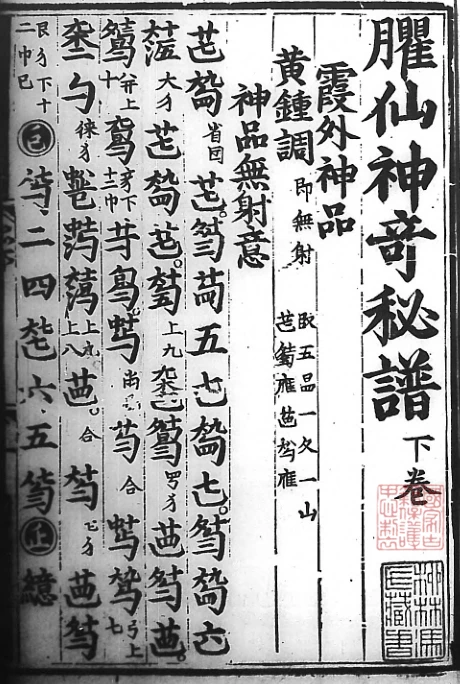

The guqin is a seven-string zither. In 1425, the Ming prince Zhu Quan compiled Shenqi Mipu (神奇秘譜), a handbook preserving 64 pieces. Its tablature tells the hands where and how to play. A player works out the timing from the gestures, the phrasing and performance practice.
The opening of this modal prelude approaches one pitch twice. First the player plucks an open string. Then the left thumb shortens another string to reach the same note. Listen for the change in attack.
The first two signs specify the plucks. The next two call for a short rest and three repetitions of the pair.

The diagram and synthesized plucks illustrate the opening signs. Pacing and absolute pitch are illustrative. John Thompson’s annotated page shows how the signs break down, and his entry for the prelude includes a full performance.
The three folios below follow the 1425 handbook in order. Each title opens John Thompson’s corresponding entry, where he documents the piece and his realization.
Handbook history · Source contents